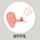

Otitis Media
Rx:
1.Tab Co-Amoxiclave 625mg N=30 q8h for 10days
Or (in Penicillin Allergy) Cap Azithromycin 250mg N=6 1st day 2 cap then 1cap daily
2. Tab Acetaminophen 500 N=20 q8h PRN
3. Syrup Pseudoephedrine N=1 5cc q8h
نکته1: در صورت تداوم و تشدید درد و تب جهت پاراسنتز گوش میانی به متخصص ارجاع شود
1️⃣ سینوزیت حاد
2️⃣ فارنژیت
3️⃣ ماستوئیدیت
4️⃣ اوتیت اکسترن
5️⃣ کلستئاتوم
6️⃣ دندان درد
7️⃣ درد مفصل TMJ
8️⃣ تروما به گوش